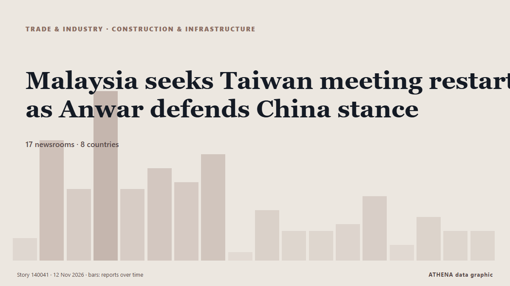

Κατασκευές & υποδομές
ΧορηγούμενοΠαρουσιάζεται από  Cybernetics and Artificial Intelligence Lab Welcome to the Cybernetics and Artificial Intelligence Laboratory, established at the Department of Business Administration of the National and Kapodistrian University of Athens. The lab is headed by Professor Dimitrios Thomakos. The lab aims to do research that can be published in top venues. Our research uses tools and methods of Artificial Intelligence, and lies in the following areas: - Forecasting - Decision making - Cyber security - Finance We are always looking forward to collaborating with exceptional students!
Cybernetics and Artificial Intelligence Lab Welcome to the Cybernetics and Artificial Intelligence Laboratory, established at the Department of Business Administration of the National and Kapodistrian University of Athens. The lab is headed by Professor Dimitrios Thomakos. The lab aims to do research that can be published in top venues. Our research uses tools and methods of Artificial Intelligence, and lies in the following areas: - Forecasting - Decision making - Cyber security - Finance We are always looking forward to collaborating with exceptional students!
| 30 Οκτ | 0 |
|---|---|
| 31 Οκτ | 0 |
| 1 Νοε | 0 |
| 2 Νοε | 0 |
| 3 Νοε | 1 |
| 4 Νοε | 0 |
| 5 Νοε | 0 |
| 6 Νοε | 0 |
| 7 Νοε | 0 |
| 8 Νοε | 0 |
| 9 Νοε | 7 |
| 10 Νοε | 5 |
| 11 Νοε | 4 |
| 12 Νοε | 1 |
Οι τίτλοι των ειδήσεων παρουσιάζονται στα αγγλικά, όπως δημοσιεύτηκαν.

Malaysia seeks Taiwan meeting restart as Anwar defends China stance
Αναφέρθηκε από 17 μέσα σε 8 χώρες από τις 3 Νοε. Πρώτη αναφορά από Mothership. Το ATHENA εκτιμά τον κίνδυνο σε 2.4/10 (μέτριος), με βεβαιότητα 84%.
Failed 112 emergency line demo exposes govt failure, says NDC
• Says failed demonstration exposes gaps in Nigeria’s emergency response infrastructure Sunday Ehigiator The National Democratic Congress (NDC) has criticised the administration of President Bola… από ThisDay (Nigeria)
Patero and Horizen Labs Partner on Enterprise Post-Quantum Migration and Network Protection
Patero and Horizen Labs have partnered to help enterprises migrate their digital communications to quantum-resistant encryption. από Quantum Computing Report
USS Nimitz Trains New, Returning Naval Aviators
The aircraft carrier USS Nimitz completed its first east coast training underway in support of carrier qualifications for both new and experienced naval aviators. από US Department of Defense
Five workers, two NPRs killed in suspected Al-Shabaab ambush in Mandera
NAIROBI,Kenya, Nov 10-Eight people, including five road construction workers, two National Police Reservists (NPRs) and a driver, have been killed in a suspected Al-Shabaab ambush targeting a… από Capital FM
SSEN Transmission breaks ground on Lewis Hub electricity project
Construction has commenced on the Lewis Hub, part of SSEN Transmission’s effort to build the Western Isles’ first direct electricity transmission connection to mainland Great Britain. από Power Technology
Sandiganbayan suspends Martin Romualdez for 90 days
MANILA, Philippines — The Sandiganbayan Third Division on Tuesday issued a 90-day preventive suspension against former Speaker Martin Romualdez in view of a plunder case stemming from alleged… από Philippine Daily Inquirer
Senate advances bill to speed up projects from gas pipelines to clean energy
Key environmental groups come out against bipartisan Baaja bill over fears it could spur datacenters and ICE jails The Senate on Monday advanced bipartisan legislation aimed at speeding up permitting… από The Guardian
WAPDA Chairman to visit Tarbela T5 project today
All workers safely evacuated after water floods Tunnel Five, Haripur DC orders inquiry. από Express Tribune
Tinubu’s exception performance ’ll make it difficult to unseat him – Wike
“You can see clearly that it will be difficult to unseat the president today because the report card is obvious in terms of what he has done. από Vanguard
Russia Hits Epicentr K Mall in Kropyvnytskyi, 2 Injured
A Russian attack hit an Epicentr K shopping center in Kropyvnytskyi on Tuesday morning, injuring two people and starting a fire after a repeat strike. από Kyiv Post
Israel claims Iranian-linked leaflets found in Tel Aviv threaten to cripple Israeli infrastructure
Israeli police open investigation after flyers attributed to Handala hacking group found in mailboxes. από Anadolu Agency (English)
Over 1.2 Million Ford Explorer Vehicles Face Probe Over Reports Linking Airbags To Burn Injuries
The National Highway Traffic Safety Administration is investigating reports that airbag deployment in certain Ford Explorer models may cause second or third degree burns. από Forbes Business